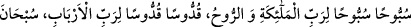
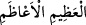
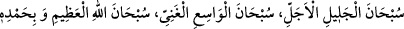

Selamımı aldı ve beni tebrik etti. Ayrılırken: “Müjdeler olsun ey Muhammed! Bütün
hayırlar sana ve ümmetine âittir.” dedi ve bundan dolayı Allah’a hamdetti.”
Bu melek yeryüzüne asla inmemiştir. Sadece Allah Rasûlü (s.a.)’in rûhunu kabzetmek
için indiğinde Azrail (a.s.) ile birlikte inmiştir.
“Emrinde yetmiş bin melek ve yine her meleğin emrinde de yetmiş bin melek vardı.
Peygamber (s.a.) diyor ki: “Bir de ne göreyim, bu melekler ordusu ayakta saf
tutmuşlar yüksek sesle tesbîh ediyor ve şöyle diyorlardı:
“Sübbûhan Sübbûhan li-Rabbi’l-melâiketi ve’r-rûh, kuddûsen kuddûsen li-
Rabbi’l-erbâb, sübhâne’l-Azîmi’l-a‘zam” “Meleklerin ve Ruh’un/Cebrâil’in) Rabbi
münezzehtir, münezzehtir. Rablerin Rabbi, mukaddestir, mukaddestir. En büyük olan
büyük, noksanlardan münezzehtir.” Onlar Mülk sûresini okuyorlardı. Orada Osman
b. Affan gibi birini gördüm. “Bu mertebeye nasıl ulaştın?” diye sordum. “Gece
namazı ile” cevabını verdi.”
Allah’ın Hâfız’a verdiği saâdet hazinesi
Gece duâsının, seher evrâdının bereketindendir
Rasûlullah (s.a.) diyor ki: “Sonra Âdem (a.s.)’ın yanına vardım. Bir de gördüm ki O,
Allah’ın kendisini yarattığı gündeki şekilde idi.” Yâni güzellik ve cemâlin son
derecesindeydi. “Tesbihi şu idi:
“Sübhâne’l-Celîli’l-ecell, sübhâne’l-Vâsii’l-Ganiyy, sübhânallâhi’l-Azîmi ve bi-
hamdihî” “Yüceler yücesi olan Allah noksanlardan münezzehtir. Geniş, zengin ve
hiçbir şeye muhtaç olmayan Allah noksanlardan münezzehtir. Yüce olan Allah’ım seni
hamdinle tesbih ederim.”
Ona mü’min olan zürriyetinin ruhları arz olununca: “Tertemiz bir bedenden çıkmış
tertemiz bir ruh, tertemiz bir nefis. Onu illiyyîne koyun.” derdi. Kâfir olan zürriyetinin
ruhları arzolununca da: “Habis bir bedenden çıkmış habis bir ruh ve habis bir nefis.
Onu siccîne koyun.” derdi.”
“Kâfirlerin ruhları için semâ kapıları açılmaz. Âdem (a.s.) semâda olduğu halde
onların ruhları ona nasıl arzolunur?” diye sorarsan, şöyle cevap veririm: Burada
kasdedilen, kâfir olan zürriyyetinden bâzılarının ruhlarıdır. Semânın altında oldukları
halde Hz. Âdem’in nazarı onlara ilişir. Çünkü semâ şeffaftır.
Yine “Zikredilen bu haber, bütün mü’minlerin ruhlarının yedinci kat semâda illiyyînde
olmasını gerektirir. Halbuki âsîlerin ruhlarının semâ ile arz arasında hapsolunduğu
sâbittir.” dersen, şöyle cevap veririm: İşin hakîkati şudur: Said kulların mertebeleri